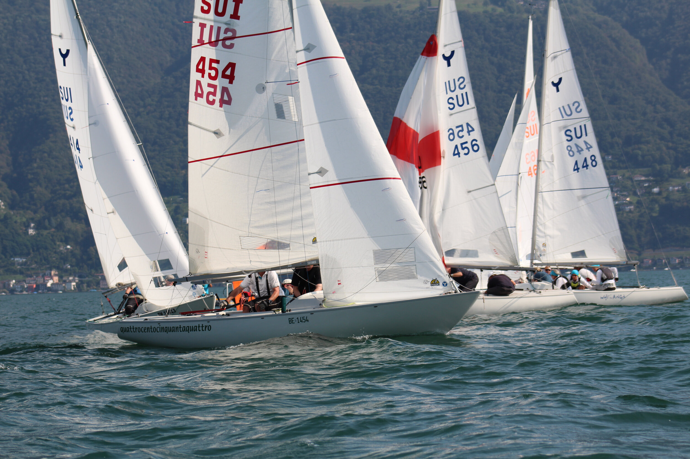
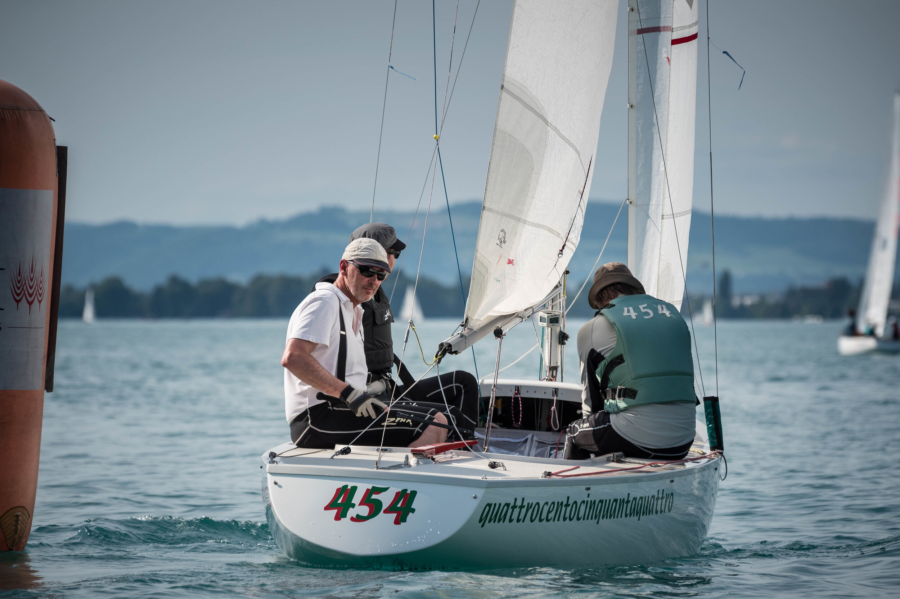
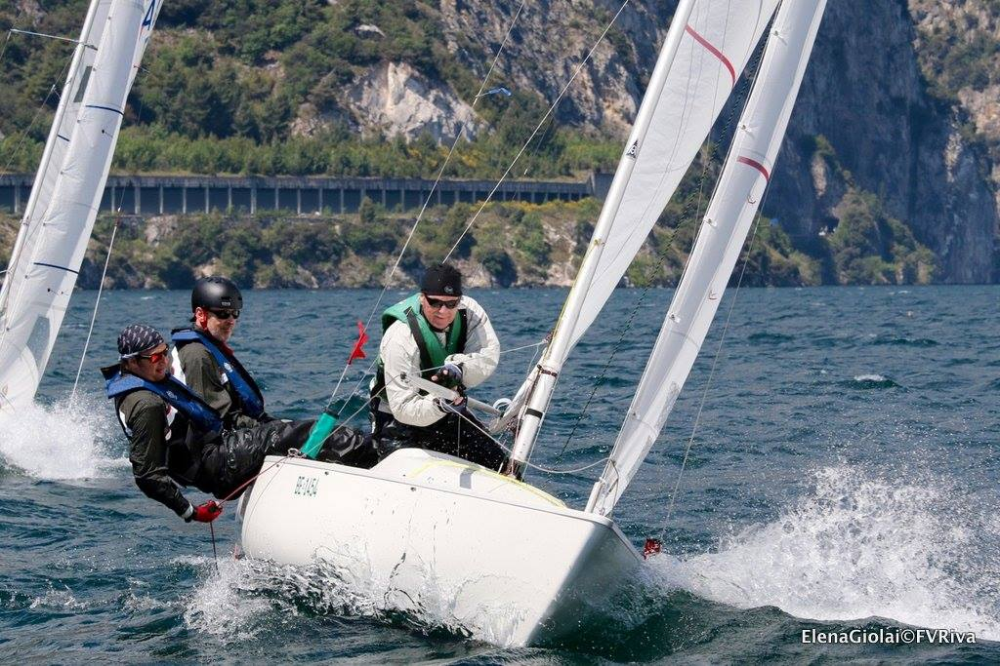

Sailing Regattas/ Results
2020

Yngling Schweizermeisterschaft Ascona Rang 4! Yngling-Cup Schlussrangliste Platz 4! Nach 2 gesegelten Regatten.
2019

Yngling-Cup Reagatta 5 Thun (TYC)! Yngling-Cup Schlussrangliste Platz 3 nach 6 gesegelten Regatten in der Schweiz!
2018

WM in Sneek/Holland Platz 23! Ynglig-Cup Vorschoter Platz 3
2017
WM in Sneek/Holland Platz 23! Ynglig-Cup Vorschoter Platz 3
2016
WM in Sneek/Holland Platz 23! Ynglig-Cup Vorschoter Platz 3
2015
WM in Sneek/Holland Platz 23! Ynglig-Cup Vorschoter Platz 3